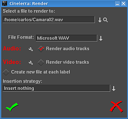

19. Le rendu de fichiers
Le rendu prend une section de la timeline, réalise tout le montage, applique
les effets et la composition et effectue l'enregistrement dans un fichier de
sortie. Vous pouvez alors supprimer tous les objets source, lire le fichier
issu du rendu dans un lecteur ou le réimporter dans Cinelerra pour y poursuivre
le montage. Il est cependant très difficile de retoucher les décisions de
montage lorsque le fichier est rendu, c'est pourquoi il vous est conseillé de
conserver les objets d'origine et le fichier XML de montage pendant quelques
jours après que vous en ayez effectué le rendu.
Toutes les opérations de rendu sont basées sur une région de la timeline. Vous
devez définir cette région sur la timeline. La section sur la navigation
décrit des méthodes pour définir des régions. Voir la section La barre temporelle. Les
fonctions de rendu définissent la région en se basant sur un jeu de règles.
Lorsqu'une région est en surbrillance ou lorsque les points d'entrée/sortie
sont placés, le rendu de la région affectée est effectué. Lorsqu'il n'y a pas
de région en surbrillance, tout ce qui se trouve après le point d'insertion est
rendu. En plaçant simplement le point d'insertion au début d'une piste et en
désélectionnant les points d'entrée/sortie, la piste toute entière est rendue.
19.1 Rendu d'un seul fichier
La manière la plus rapide de finaliser votre vidéo sur le disque est d'utiliser
la fonction de rendu d'un seul fichier.
Allez dans Afficher->Rendu ou pressez MAJ-R pour afficher le dialogue
de rendu. Choisissez la loupe pour
afficher un dialogue de sélection de fichier. Ceci permet de définir le nom du
fichier vers lequel il faudra écrire les données issues du rendu et de définir
les paramètres d'encodage.

La fenêtre de rendu
Dans le dialogue de rendu, choisissez un Format de fichier. Le format du
fichier détermine si vous pouvez effectuer le rendu d'audio, de vidéo ou des
deux à la fois. Cochez la case Rendu des pistes audio pour créer des
pistes audio et Rendu des pistes vidéo pour créer des pistes vidéo.
Sélectionnez la clé  qui se trouve près
de chacune des cases afin de déterminer les paramètres de compression. Si le
format du fichier ne permet pas d'enregistrer de l'audio ou de la vidéo les
paramètres de compression seront vierges. Si vous avez choisi Rendu des
pistes audio ou Rendu des pistes vidéo et que le format du fichier ne le
gère pas, une fenêtre d'erreur sera affichée.
qui se trouve près
de chacune des cases afin de déterminer les paramètres de compression. Si le
format du fichier ne permet pas d'enregistrer de l'audio ou de la vidéo les
paramètres de compression seront vierges. Si vous avez choisi Rendu des
pistes audio ou Rendu des pistes vidéo et que le format du fichier ne le
gère pas, une fenêtre d'erreur sera affichée.
19.2 Rendu dans des fichiers séparés
La case à cocher Créer un nouveau fichier à chaque marque provoquera la
création d'un nouveau fichier chaque fois qu'une marque sera rencontrée sur la
timeline. Ceci est utile pour séparer de longs enregistrements audio en des
fichiers séparés. Lorsque vous utilisez la grappe de calcul, Créer un
nouveau fichier à chaque marque entraînera la création d'une nouvelle tâche à
chaque marque plutôt que de d'utiliser l'algorithme interne d'équilibrage de la
charge pour espacer les tâches.
Lorsque Créer un nouveau fichier à chaque marque est sélectionné, un
nouveau nom de fichier est créé pour chaque fichier de sortie. Si le nom de
fichier donné dans le dialogue de rendu contient un nombre sur deux chiffres,
ce nombre sera réécrit avec un nombre différent qui sera incrémenté pour chacun
des fichiers de sortie. Si deux chiffres ne sont pas renseignés, Cinelerra
concaténera automatiquement, pour chacun des fichiers de sortie, un nombre à la
fin du nom de fichier indiqué.
Dans le nom de fichier `/hmov/track01.wav', le `01' sera réécrit pour
chaque fichier de sortie. Cependant, le nom de fichier `/hmov/track.wav',
deviendra `/hmov/track.wav001' et ainsi de suite. La modification des
noms de fichiers n'est utilisée que lorsque la grappe de calcul est active ou
lorsque l'option Créer un nouveau fichier à chaque marque a été
sélectionnée.
19.3 Stratégie d'insertion des fichiers rendus
Enfin, le dialogue de sortie vous permet de choisir le mode d'insertion. Les
modes d'insertion sont identiques à ceux du chargement de fichiers. Dans ce
cas, si vous choisissez de ne rien insérer, le fichier sera écrit sur le
disque sans modifier le projet actuel. Pour les autres stratégies d'insertion,
assurez-vous d'avoir préparé la timeline afin que la sortie soit insérée au bon
endroit avant que l'opération de rendu ne soit effectuée. Voir la section Le montage.
Le montage décrit comment faire pour que la sortie soit insérée au bon
endroit.
Il faut noter que même si vous ne voulez effectuer le rendu que de l'audio ou
que de la vidéo, une stratégie d'insertion de type coller se comportera
comme une opération de coller normale, toute région de la timeline sélectionnée
sera effacée et seules les données rendues seront collées. Si vous ne rendez
que de l'audio et que vous avez des pistes vidéo armées, les pistes vidéo
seront tronquées lorsque l'audio sera collé sur les pistes audio.
19.4 Rendu par lots
Si vous voulez effectuer le rendu de nombreux projets vers des fichiers de
média sans avoir à utiliser de manière répétitive le dialogue de rendu, le
rendu par lots est la fonction à utiliser. Dans cette fonction, vous
indiquerez toutes les EDL dont il faut effectuer le rendu avec les fichiers de
sortie correspondant. Cinelerra va alors charger chaque fichier EDL et
effectuer le rendu automatiquement, sans intervention de l'utilisateur. Chaque
EDL et sa sortie associée est appelé lot. Ceci permet de traiter un très
gros volume de média et améliore beaucoup la rentabilité d'un ordinateur
coûteux.
La première chose à faire lors de la préparation d'un rendu par lots est de
définir les projets dont il faut effectuer le rendu. Définissez un projet et
indiquez la région devant être rendue soit en la mettant en surbrillance, soit
en l'encadrant par les points d'entrée/sortie ou la faisant précéder du point
d'insertion. Enregistrez alors le projet sous forme d'EDL. Définissez de
cette manière autant de projets que nécessaire. Le rendu par lots récupère la
région active du fichier EDL pour le rendu.
Lorsque tous les fichiers EDL sont prêts avec leur région active, sélectionnez
l'entrée de menu Fichier->Rendu par lots. Le dialogue de rendu par lots
s'affichera alors. L'interface pour le rendu par lots est un peu plus
compliquée que pour le rendu d'un seul fichier.
Il faut, avant de lancer une opération de rendu par lots, créer une liste des
lots. La table des lots qui apparaît en bas du dialogue de rendu par lots est
appelé Lots dont il faut effectuer le rendu. Au-dessus de ce tableau
figurent les paramètres de configuration pour un lot.
Définissez le chemin de sortie, le format de fichier, l'Audio, la
Vidéo et le paramètre Créer un nouveau fichier à chaque marque comme
s'il s'agissait d'un seul fichier. Ces paramètres ne s'appliquent qu'à un seul
lot. En plus des paramètres de rendu habituels, vous devez indiquer le fichier
EDL source à utiliser pour le lot. Faites-le en indiquant le chemin vers
l'EDL.
Si la liste des lots dont il faut effectuer le rendu est vide ou si rien
n'est en surbrillance, cliquez sur Nouveau pour créer un nouveau lot. Le
nouveau lot se verra affecter tous les paramètres que vous venez juste de
définir.
En pressant plusieurs fois le bouton Nouveau, vous allez créer d'autres
lots avec les mêmes paramètres. Mettez en surbrillance un lot pour pouvoir
modifier sa configuration depuis la partie supérieure de la fenêtre de rendu
par lots. Les informations affichées correspondent toujours au lot en
surbrillance.
Il suffit de cliquer-glisser les lots pour modifier l'ordre avec lequel le
rendu sera effectué. Cliquez sur Supprimer pour supprimer définitivement
le lot en surbrillance.
Il y a dans la liste une colonne qui permet d'activer ou de désactiver un lot.
De cette manière, des lots peuvent être sautés lors du rendu sans être
supprimés. Cliquez sur la case Activé dans la liste pour activer ou
désactiver un lot. Si elle est cochée, le lot sera rendu. Si elle est vide,
le lot sera sauté.
Les autres colonnes de la liste des lots ne sont là que pour donner des
informations.
- Sortie chemin vers la sortie du lot.
- EDL EDL source du lot.
- Temps écoulé temps ayant été nécessaire pour effectuer le rendu du
lot s'il est terminé.
Pour lancer le rendu en commençant par le premier lot, cliquez sur
Démarrer.
Lorsque le rendu est en cours, la fenêtre principale affiche l'avancement du
lot. Une fois le lot terminé, la colonne Temps écoulé dans la liste des
lots est mise à jour et le lot suivant est rendu jusqu'à ce que tous les lots
activés soient rendus. Le lot en cours de rendu est affiché en rouge.
Pour arrêter le rendu avant que les lots ne soient terminés sans fermer le
dialogue de rendu par lots, cliquez Arrêter.
Pour arrêter le rendu avant que les lots ne soient terminés en fermant le
dialogue de rendu, cliquez sur Abandonner.
Pour quitter le dialogue de rendu qu'il y ait ou non un rendu en cours, cliquez
sur Abandonner.
19.5 La grappe de rendu
Lorsqu'une interpolation bicubique avec de la HDTV a été réalisée pour la
première fois dans Cinelerra, le temps nécessaire pour produire la moindre
sortie devint inacceptable, même sur la machine la plus rapide disponible
alors, un double Xeon 1,7 GHz. La grappe de calcul, même dans sa forme la plus
simple, permit de mettre la HDTV au même niveau que la SD tout en rendant la SD
plus rapide que le temps réel.
Bien que l'interface de la grappe de calcul ne soit pas spectaculaire, il est
suffisamment simple à utiliser depuis une suite de montage avec moins d'une
douzaine de noeuds sans avoir les complications de que vous auriez à configurer
une grappe de calcul de plusieurs centaines de noeuds. La grappe de calcul est
appelée de manière transparente pour toutes les opérations de rendu effectuées
depuis Fichier->Rendu une fois qu'elle a été activée dans les préférences.
Cinelerra divise la région choisie de la timeline en un certain nombre de
tâches qui sont ensuite réparties entre les différents noeuds en fonction de
l'équilibre de la charge. Les noeuds traitent les tâches et écrivent leur
sortie vers des fichiers séparés du système de fichiers. Les fichiers de
sortie ne sont pas concaténés. Il est important que tous les noeuds aient
accès aux objets sur le même système de fichiers associé au même point de
montage.
Si un noeud ne peut pas avoir accès à un objet d'entrée, il affichera un
message d'erreur sur sa console mais ne plantera probablement pas. S'il ne
peut pas avoir accès aux objets en sortie, cela arrêtera le rendu.
Il faut noter que, dans le dialogue de rendu, l'option Créer un nouveau
fichier à chaque marque créera une nouvelle tâche pour la grappe de calcul à
chaque marque plutôt que de les voir crées par le système d'équilibrage de
charge. Si cette option est sélectionnée alors qu'il n'existe aucune marque,
une seule tâche sera créée.
Une grappe de calcul de Cinelerra est organisée avec un noeud principal et un
nombre quelconque de noeuds secondaires. Le noeud principal est l'ordinateur
sur lequel tourne l'interface graphique. Les noeuds secondaires se trouvent
n'importe où sur le réseau et sont lancés en ligne de commande. On lance un
noeud secondaire avec la commande cinelerra -d
C'est la configuration la plus simple. Entrez cinelerra -h pour
obtenir l'ensemble des options disponibles. Le numéro de port par défaut peut
être modifié en passant en paramètre un numéro de port après `-d'.
La plupart du temps, vous désirerez aller dans la sortie rendue et ajuster les
temps sur la timeline. Mais certains formats de fichiers comme MPEG ne peuvent
pas être copiés directement. C'est pour cette raison que les fichiers sont
laissés sous forme de fichiers séparés.
Vous pouvez les charger en créant de nouvelles pistes et en indiquant
Ajouter aux pistes existantes dans le dialogue de chargement. Les fichiers
qui autorisent la copie directe peuvent être concaténés dans un fichier unique
en effectuant le rendu dans le même format de fichier, la grappe de calcul
étant désactivée. Pour pouvoir effectuer une copie directe, la taille de la
piste, les dimensions en sortie et les dimensions des objets doivent aussi être
identiques.
Les fichiers MPEG ou les fichiers qui ne permettent pas la copie directe
doivent être concaténés avec un utilitaire en ligne de commande. Les fichiers
MPEG peuvent être concaténés avec la commande cat.
La configuration de la grappe de calcul est décrite dans le chapitre sur la
configuration. Voir la section La grappe de calcul. Traditionnellement, les noeuds
secondaires lisent et écrivent les données vers un système de fichiers par
l'intermédiaire du réseau et ils n'ont donc pas besoin de disque dur.
Idéalement, tous les noeuds d'une grappe de calculs devraient avoir les mêmes
caractéristiques de CPU. Cinelerra effectue l'équilibrage de la charge sur la
base du premier arrivé, premier servi. Si le dernier segment est affecté au
noeud le plus lent, tous les noeuds plus rapides attendront que le noeud le
plus lent ait terminé alors qu'ils auraient pu en effectuer le rendu plus
rapidement.
19.6 Rendu en ligne de commandes
Le rendu en ligne de commandes est une manière de charger le jeu actuel de
tâches de rendu par lots et de les traiter sans interface graphique. C'est
utile si vous avez un système X qui plante souvent ou si vous désirez effectuer
le rendu par l'intermédiaire d'une liaison réseau à faible débit. Vous pouvez
avoir accès à un supercalculateur en Inde mais être coincé en Amérique,
peut-être exilé. Une interface en ligne de commande est idéale pour
solutionner ce problème.
Pour effectuer le rendu depuis la ligne de commandes, lancez d'abord Cinelerra
en mode graphique. Allez dans le menu Fichier->Rendu par lots. Créez les
lots dont vous désirez effectuer le rendu dans la fenêtre de rendu par lot et
fermez la fenêtre. Ceci enregistre les lots dans un fichier. Configurez les
attributs voulus pour la grappe de calcul dans Configuration->Préférences
et quittez Cinelerra. Ces paramètres sont utilisés lorsque le rendu en ligne
de commandes est utilisé par la suite.
Sur la ligne de commandes, entrez : cinelerra -r
pour traiter le lot de travaux en cours sans interface graphique. La
configuration de tous les paramètres pour cette opération est compliquée.
C'est pourquoi la ligne de commande s'arrête si un des quelconques fichiers de
sortie existe déjà.
Il existe d'autres paramètres pour indiquer des fichiers de remplacement pour
les préférences et les lots. Une tentative pour utiliser autre chose que les
valeurs par défaut est assez risquée et n'a donc pas été testée.
19.7 Rendu de vidéos pour internet
Si vous désirez réencoder votre fichier rendu avec mencoder, nous vous
recommandons d'en effectuer son rendu sous forme de fichier Quicktime4linux, et
d'ensuite encoder ce fichier dans les formats MPEG4 ou FLV. Le fichier
Quicktime4linux rendu depuis Cinelerra doit avoir les propriétés suivantes :
- Options Audio : Complément à deux 16bits (PCM)
- Options Vidéo : DV
19.7.1 Encoder une vidéo au format MPEG4 pour internet
Pour obtenir la meilleure qualité possible, vous devez encoder votre fichier
Quicktime4linux en deux passes.
Première passe :
mencoder input.mov -ovc xvid -xvidencopts bitrate=600:pass=1 \
-vf scale=320:240 -oac mp3lame -lameopts abr:br=64 -o output.avi
Seconde passe :
mencoder input.mov -ovc xvid -xvidencopts bitrate=600:pass=2 \
-vf scale=320:240 -oac mp3lame -lameopts abr:br=64 -o output.avi
N'oubliez pas de changer la dimension de la vidéo encodées, en utilisant
l'option `-vf scale='.
Voici d'autres lignes de commandes. Elles procurent des fichiers vidéos dont le poids
est d'environ 13 Mb pour 3 minutes.
Première passe :
mencoder -oac pcm -sws 2 -vf scale=${width}:${height},hqdn3d=2:1:2 \
-ovc lavc -lavcopts vcodec=mpeg4:vbitrate=${video_bitrate}:vlelim=-4:\
vcelim=7:lumi_mask=0.05:dark_mask=0.01:scplx_mask=0.3:naq:v4mv:mbd=2:\
trell:cmp=3:subcmp=3:mbcmp=3:aspect=4/3:sc_threshold=1000000000:\
vmax_b_frames=2:vb_strategy=1:dia=3:predia=3:cbp:mv0:preme=2:\
last_pred=3:vpass=1:cgop -ofps 25 -of avi movie.mov -o /dev/null\
-ffourcc DIVX
Seconde pass :
mencoder -srate 32000 -oac mp3lame -lameopts cbr:br=${audio_bitrate}:\
aq=0 -sws 2 -vf scale=${width}:${height},hqdn3d=2:1:2 -ovc lavc\
-lavcopts vcodec=mpeg4:vbitrate=${video_bitrate}:vlelim=-4:vcelim=7:\
lumi_mask=0.05:dark_mask=0.01:scplx_mask=0.3:naq:v4mv:mbd=2:trell:\
cmp=3:subcmp=3:mbcmp=3:aspect=4/3:sc_threshold=1000000000:\
vmax_b_frames=2:dia=3:predia=3:cbp:mv0:preme=2:last_pred=3:vpass=3:\
cgop -ofps 25 -of avi movie.mov -o movie.avi -ffourcc DIVX
Vous devrez probablement adapter ces lignes de commandes si l'image de la vidéo
originale comprend beaucoup de bruit; renseignez-vous sur les filtres de
pré-traitement de mencoder. Les paramètres *_mask sont très important lors
d'un encodage à un faible débit binaire.
Si vous voulez que votre fichier vidéo soit affiché correctement dans un
visualisateur de vidéo très connu sous Windows, vous devez savoir que :
- l'information de ratio d'aspect contenue dans l'entête du fichier AVI ne
sera pas prise en compte par ce lecteur. C'est pourquoi vous devez
redimenssionner vous-même l'image au bon ratio d'aspect. La largeur et la
hauteur doivent être des multiples de 16. Voici les résolutions recommandées
pour des vidéos en 4/3 au format PAL : 384:288, 448:336, 512:384 or
704:528.
- ce visualisateur de vidéo fonctionnant sous Windows va perdre la
synchronisation audio/vidéo si un débit binaire variable (VBR) est utilisé pour
l'audio, à la place d'un débit binaire constant (CBR).
- Le paramètre `-ffourcc' est nécessaire afin que le codec vidéo
soit reconnu en tant que Divx.
19.7.2 Encoder une vidéo au format FLV pour internet
Le poids des fichiers FLV (FLash Video) est très petit et les seuls composants
qui soient nécessaires pour les afficher est un navigateur internet et un
greffon flash version 7 ou supérieur installé. Ce format est vraiment utile
pour les personnes qui désirent partager leur vidéo avec une large audience sur
internet.
Première passe :
ffmpeg -i movie.mov -b 430 -s 320x240 -aspect 4:3 -pass 1 -ar 22050 movie.flv
Seconde passe :
ffmpeg -i movie.mov -b 430 -s 320x240 -aspect 4:3 -pass 2 -ar 22050 movie.flv
Faites attention à l'extension du nom de fichier de sortie. Ffmpeg l'utilise
pour déterminer le format de sortie. La fréquence d'échantillonnage de l'audio
à utiliser est de 22050 et le paramètre `-ar' doit être utilisé pour
permettre à la vidéo d'être correctement encodée. Ffmpeg n'écrit pas de
méta-données dans le fichier flv. La durée doit être écrite dans ces
meta-données afin que certains visualisateur flash puissent afficher une barre
de progression de la lecture. FLVTool2
(http://www.inlet-media.de/flvtool2) peut être utilisé afin d'insérer
cette information :
cat fichier_entree.flv | flvtool2 -U stdin fichier_sortie.flv
19.8 Charte de compatibilité de Quicktime pour GNU/Linux
Scott Frase a écrit une charte de compatibilité de Quicktime pour GNU/Linux. Elle
comprend une liste exhaustive des tous les schémas de compression Quicktime
disponibles et de leur compatibilité avec Cinelerra, Mplayer et autres
logiciels de lecture de de médias. Ce document comporte deux parties
principales, une est basée sur un projet formaté selon une résolution HDV et
une autre basée sur un projet dans une résolution au format DV.
Il se trouve disponible ici :
http://content.serveftp.net/video/qtcompatibility.ods
Quelques notes intéressantes :
- Mplayer se comporte mieux avec la résolution vidéo DV, plus faible
- La compatibilité de Cinelerra avec des fichiers rendus depuis un projet
DV n'est pas très différente de sa compatibilité avec des fichiers rendus
depuis un projet HDV.
- Elle comporte une charte de comparaison de compatibilité DV/HDV
mplayer/Cinelerra
19.9 Faire un DVD
19.9.1 Rendu vers mpeg2
Voici une méthode pour exporter une vidéo mpeg2 et réaliser un DVD ne
comportant qu'un seul chapitre. Cette méthode vous permet de définir
précisément les options d'encodage que vous désirez et produit un fichier mpeg2
100% compatible avec tous les lecteurs de DVD de salon.
Le programme mplex, qui fait partie de mjpegtools doit être installé. Le
paquet mjpegtools fait partie de la distribution hvirtual et l'utilitaire mplex
peut en être extrait.
Assurez-vous d'abord que vous avez correctement défini votre format de projet
Cinelerra avant d'effectuer le rendu de votre vidéo (menu
Configuration->Format). En PAL, il d'agit de 720x576 à 25 images/seconde,
et en NTSC, il s'agit de 720x480 à 29,97 images par seconde.
- Créez un script `~/cine_render.sh'
- Copiez dans le fichier `~/cine_render.sh file' les lignes
suivantes :
#/bin/bash
mpeg2enc -v 0 -K tmpgenc -r 16 -4 1 -2 1 -D 10 -E 10 -g 15 -G 15 -q 6
-b 8600 -f 8 -o $1
- Donnez les droits d'exécution à ce fichier :
chmod 777 ~/cine_render.sh
- Lancez Cinelerra, et sélectionnez la partie de la vidéo dont vous désirez
effectuer le rendu à l'aide des points [ et ]
- Pressez MAJ-R
- Sélectionnez le format de fichier YUV4MPEG Stream
- Désélectionnez Rendu des pistes audio et sélectionnez Rendu des
pistes vidéo
- Cliquez sur la clé des options
- Dans la fenêtre qui s'ouvre alors, indiquez le nom du fichier `m2v'
que vous désirez créer. Ce fichier ne comportera que de la vidéo.
- Cliquez sur Use pipe et écrivez cette commande :
/home/<your_user>/cine_render.sh %
- Cliquez sur OK pour fermer la seconde fenêtre et de nouveau OK pour
effectuer le rendu de votre fichier `m2v'
- Lorsque le rendu du fichier m2v est terminé, ouvrez de nouveau la fenêtre
de rendu, et effectuez le rendu audio d'un fichier AC3 à 224 kbits
- Enfin, combinez la vidéo et l'audio avec cette commande :
mplex -f 8 votre_fichier_video.m2v votre_fichier_audio.ac3 -o
votre_fichier_audio_et_video.mpeg
Si vous obtenez des erreurs lors de l'appel à mplex, augmentez la valeur du
paramètre de quantification (option `-q', voyez ci-dessous).
Vous pouvez modifier les paramètres de mpeg2enc si vous le désirez. Consultez
la page de manuel de mpeg2enc. Quelques détails concernant les paramètres :
- `-b 8600' : c'est le débit binaire maximum de votre fichier
`m2v' (il ne comprend pas le débit binaire audio). Nous vous recommandons
de ne pas augmenter cette valeur car vous pourriez avoir des erreur en
multiplexant l'audio et la vidéo.
- `-q 6' : c'est le paramètre de quantification. Si vous le
réduisez (n'allez pas en-dessous de 3), la qualité s'améliore. Mais le débit
binaire augmente. Il est recommandé de conserver le débit binaire moyen obtenu
(il est affiché lorsque vous effectuez le multiplexage des fichiers audio et
vidéo) aux alentours de 10% en-dessous du débit binaire définit avec l'option
`-b'.
- `-K tmpgenc' : utilise les matrices d'encodage de TMPGEnc. Cela
réduit le débit binaire moyen d'environ 10% comparé aux tables par défaut.
Lorsque la vidéo utilisée en entrée est de très bonne qualité, on peut se
passer de cette option.
Si votre matériau est affecté de bruit (support Hi8 analogique par exemple),
vous pouvez ajouter quelques commandes de mjpegtools dans la lignes de
commandes écrite dans `~/cine_render.sh' :
-
y4mshift et y4mscaler peuvent être utilisés pour
supprimer les bords bruités autour de la vidéo. Par exemple, ces commandes,
ajoutées au début de la ligne de commande dans le `cine_render.sh'
suppriment les bordures noires qui entourent une vidéo Hi8 :
yuvscaler -v 0 -I ACTIVE_700x560+8+8 | y4mshift -n 2 |
-
yuvdenoise et yuvmedianfilter peuvent aider à
supprimer le bruit. Example :
yuvdenoise -F | yuvmedianfilter -T 3 |
La suppression de bruit est une tâche complexe, et les options indiquées
ci-dessus sont juste un exemple. Veuillez lire la documentation de mjpegtools
et vous abonner à sa liste de diffusion pour davantage s'informations.
19.9.2 Faire un menu de DVD
Un menu de DVD est composé :
- d'un arrière-plan (image fixe ou vidéo)
- de boutons
- de son/musique
Vous pouvez bâtir un menu avec une interface graphique telles que QDVDAuthor,
dvdstyler, dvdwizard ou tovid. Cependant, l'utilisation de ces interfaces
n'est pas parfaite ou est pour le moment limitée.
Si vous préférez utiliser une interface graphique, nous vous recommandons
d'essayer tovid :
http://tovid.wikia.com/wiki/Main_Page
QDVDAuthor contenait énormément de bugs il y a quelque temps, mais son auteur
en a corrigé certains, ce qui rend QDVDAuthor plus utilisable.
La méthode que nous expliquons ci-dessous est plus compliquée que l'utilisation
d'une interface graphique, mais cependant :
- elle produit des DVD lisibles sur tous les lecteurs de salon
- elle n'est pas sujette à des bogues
- elle vous fera gagner beaucoup de temps car tout ce que vous aurez à
faire pour créer un nouveau DVD sera d'éditer des fichiers de texte
Voici les étapes nécessaires à la création de votre menu de DVD :
- créez l'arrière-plan du menu avec Cinelerra
- ajoutez les boutons en créant des images PNG
- combinez le menu et les boutons à l'aide de spumux
Supposons que vous désiriez créer un menu avec un arrière-plan animé. Lancez
Cinelerra et créez un projet contenant l'arrière-plan du menu. Vous pouvez
ajouter une musique si vous le désirez. Faites attention au fait que le menu
sera joué en boucle.
Pour dessiner les boutons, vous avez deux possibilités :
- affichez-les dans Cinelerra. De cette manière, il vous sera possible de
faire de boutons animés, comme des vignettes vidéo pour chacune des parties de
votre vidéo.
- ne pas dessiner les boutons dans in Cinelerra. Vous les ajouterez plus
tard, depuis des images PNG ajoutées au fichier de menu mpeg2. Ceci est la
méthode la plus simple mais elle ne vous permet pas d'afficher des boutons
animés.
Effectuez le rendu de cette vidéo en m2v et ac3 en utilisant la méthode
cine_render.sh expliquée plus haut. Combinez l'audio et la vidéo en
utilisant mplex comme vous le feriez avec une vidéo normale.
Vous obtenez un fichier mpeg2 qui contient l'arrière-plan du menu, avec
quelques boutons affichés si vous les avez ajoutés dans Cinelerra.
Nous devons utiliser spumux pour définir la position de chacun des boutons dans
le fichier mpeg2. Si vous n'avez pas dessiné les boutons dans Cinelerra, vous
pourrez les ajouter avec spumux.
Spumux est un utilitaire en ligne de commande qui prend 2 paramètres :
- un fichier XML décrivant où se trouvent les boutons
- le nom du fichier mpeg2 (celui dont vous avez effectué le rendu pour le
menu)
Voici un exemple de fichier XML spumux :
<subpictures>
<stream>
<spu start="00:00:00.0" image="buttons_normal.png" highlight=
"buttons_highlight.png" select="buttons_select.png">
<button name="1" x0="94 " y0="234 " x1="253 " y1="278"
down="2" right="4" />
<button name="2" x0="63 " y0="287 " x1="379 " y1="331" up="1"
down="3" right="5" />
</spu>
</stream>
</subpictures>
- image="buttons_normal.png" cette image png contient les boutons tels
qu'ils apparaîtront lorsqu'ils ne sont pas sélectionnés ni mis en surbrillance.
- highlight="buttons_highlight.png" cette image png contient les
boutons dans leur état de surbrillance.
- select="buttons_select.png cette image png contient les boutons dans
leur état sélectionné.
Si vous avez déjà fait les boutons depuis Cinelerra, vous devez indiquer ici
des images PNG vides (100% transparentes).
Les images PNG utilisées dans spumux doivent :
- contenir un canal alpha (c'est-à-dire gérer la transparence)
- avoir 4 couleurs indexées. Vous pouvez facilement convertir une
image sous un format à 4 couleurs indexées en utilisant Gimp.
Il y a une ligne par bouton. Chaque ligne comporte les coordonnées du bouton,
chaque bouton ayant une forme rectangulaire :
- x0, y0 : angle supérieur gauche
- x1, y1 : angle inférieur droit
Vous devez aussi définir quel bouton actionner lors de l'utilisation des
boutons haut, bas, gauche et droite de la télécommande du lecteur de DVD.
Voici un exemple :
<button name="3" ...coordinates... up="1" down="5" left="2" right="4" />
Lorsque le bouton 3 est sélectionné, si la touche "haut" est pressée sur la
télécommande, alors le bouton 1 sera mis en surbrillance. Si la touche
"droite" est pressée sur la télécommande, alors le bouton 4 sera mis en
surbrillance.
Lorsque vous avez terminé l'édition de votre fichier XML spumux, vous devez
entrer cette commande :
spumux menu.xml < menu.mpeg > menu_with_buttons.mpeg
Ceci créera le fichier `menu_with_buttons.mpeg'. C'est un fichier mpeg2
avec les boutons.
19.9.3 Créer un DVD
Après avoir effectué le rendu de vos fichiers vidéo mpeg2, et après avoir
préparé un menu à l'aide de spumux, vous devez créer le DVD avec dvdauthor.
Dvdauthor utilise des fichiers XML pour décrire la structure du DVD. Sa
syntaxe est rigoureuse, et vous devrez faire très attention à la syntaxe du
fichier .xml. Dans le cas contraire, le risque est que le DVD soit lisible sur
certains lecteurs de salon, mais pas sur tous.
Pour vous aider dans l'utilisation de dvdauthor, voyons quelques exemples de
fichiers XML.
<dvdauthor dest="/chemin/vers/le/dossier/qui/contient/le/dvd">
<vmgm />
<titleset>
<titles>
<pgc>
<vob file="/the/mpeg/file.mpeg" />
<post>
jump chapter 1;
</post>
</pgc>
</titles>
</titleset>
</dvdauthor>
C'est un fichier XML très simple pour dvdauthor. Il n'y a pas de menu, le
fichier vidéo `/the/mpeg/file.mpeg' sera joué dès que vous insérerez le
DVD dans le lecteur.
La commande entre les balises <post> signifie que la vidéo doit être lue en
boucle. Quand la platine DVD arrive à la fin de la vidéo, elle se repositionne
au premier chapitre de la vidéo (que dvdauthor assume être le début de la vidéo
puisqu'aucun chapitre n'a été défini).
Pour créer le DVD, entrez juste la commande suivante :
dvdauthor -x simple_example.xml
Maintenant, voyons un exemple plus complexe. Lorsque le DVD est inséré, un
menu est affiché et vous avez le choix de la lecture entre 4 vidéos.
<dvdauthor dest="/chemin/vers/le/dossier/qui/contient/le/dvd" jumppad="yes" >
<vmgm>
<fpc> jump menu 1; </fpc>
<menus>
<video format="pal" aspect="4:3" resolution="720x576" />
<pgc entry="title" >
<vob file="menu.mpeg" pause="0" />
<button name="1" > { g3=1; jump titleset 1 menu entry root; } </button>
<button name="2" > { g3=2; jump titleset 1 menu entry root; } </button>
<button name="3" > { g3=3; jump titleset 1 menu entry root; } </button>
<button name="4" > { g3=4; jump titleset 1 menu entry root; } </button>
<post> { jump cell 1; } </post>
</pgc>
</menus>
</vmgm>
<titleset>
<menus>
<pgc entry="root" >
<pre> { if ( g3 gt 0 ) {
if ( g3 eq 1 ) { g3=0; jump title 1 chapter 1; }
if ( g3 eq 2 ) { g3=0; jump title 1 chapter 3; }
if ( g3 eq 3 ) { g3=0; jump title 1 chapter 5; }
if ( g3 eq 4 ) { g3=0; jump title 1 chapter 7; }
jump vmgm menu entry title;
}
} </pre>
<post> { jump vmgm menu entry title; } </post>
</pgc>
</menus>
<titles>
<video format="pal" aspect="4:3" resolution="720x576" />
<pgc pause="0" >
<vob file="video_1.mpeg" pause="0" />
<vob file="blackvideo.mpg" pause="0" />
<vob file="video_2.mpeg" pause="0" />
<vob file="blackvideo.mpg" pause="0" />
<vob file="video_3.mpeg" pause="0" />
<vob file="blackvideo.mpg" pause="0" />
<vob file="video_4.mpeg" pause="0" />
<post> { call vmgm menu entry title; } </post>
</pgc>
</titles>
</titleset>
</dvdauthor>
Le fichier `blackvideo.mpg' est utilisé pour ajouter deux secondes
d'affichage noir entre chaque vidéo. Voici la manière de le créer :
convert -size 720x576 xc:black -depth 8 blackframe.ppm
dd if=/dev/zero bs=4 count=960000 | toolame -b 128 -s 48 /dev/stdin
emptyaudio.mpa
ppmtoy4m -S 420mpeg2 -n 50 -F 25:1 -r blackframe.ppm | mpeg2enc -a 2
-n p -f 8 -o blackvideo.mpv
mplex -f 8 -o blackvideo.mpg blackvideo.mpv emptyaudio.mpa
19.9.4 Graver un DVD
Lorsque vous avez terminé la création du DVD, vous obtiendrez dans le dossier
de destination les répertoires suivants : `AUDIO_TS' et
`VIDEO_TS'. Pour tester votre DVD avant de le graver, allez dans ce
dossier et exécutez :
xine dvd:`pwd`
Si votre DVD est lu sans problème sur votre ordinateur, c'est le moment de le
graver. Lorsque vous vous trouvez dans le dossier de qui contient `AUDIO_TS'
et `VIDEO_TS', lancez cette commande : (ajustez pour votre graveur,
par exemple /dev/dvdrw)
nice -n -20 growisofs -dvd-compat -speed=2 -Z /dev/dvd -dvd-video -V
VIDEO ./ && eject /dev/dvd
Si vous avez de nombreuses copies à réaliser, vous pouvez d'abord créer un
fichier master .iso en utilisant cette commande :
nice -n -20 mkisofs -dvd-video -V VIDEO -o ../dvd.iso .
Ce fichier `../dvd.iso' peut être gravé en utilisant cette commande :
nice -n -20 growisofs -dvd-compat -speed=2 -Z /dev/dvd=../dvd.iso &&
eject /dev/cdrom
Nous vous recommandons de ne pas effectuer de gravure à une vitesse supérieure
à 4x. Utilisez uniquement des DVD-R de bonne qualité.
Pour tester votre DVD sur une platine de salon sans avoir à gaspiller plusieurs
DVD-R, vous pouvez graver sur des DVD-RW. Tout d'abord, formattez votre DVD-RW
en utilisant cette commande :
dvd+rw-format -lead-out /dev/dvd
Vous pouvez alors graver votre DVD-RW en utilisant les commandes qui ont été
indiquées plus haut.
19.10 Utiliser le rendu en tâche de fond
Le rendu en tâche de fond permet à des effets très lents d'être joués en temps
réel rapidement après avoir été déposé sur la timeline. Il effectue en
permanence le rendu vers une sortie temporaire. Si la grappe de calcul est
active, le rendu en tâche de fond l'utilise en permanence. De cette manière,
n'importe quelle taille de vidéo peut être affichée en temps réel en créant
simplement un réseau suffisamment rapide avec suffisamment de noeuds
Le rendu en tâche de fond est activé depuis
Configuration->Préférences->Performances. Il possède une fonction
interactive : Configuration->Point de départ du rendu en tâche de fond.
Ceci définit le point à partir duquel se fait le rendu en tâche de fond. S'il
y a de la vidéo, une barre rouge apparaît dans la barre temporelle qui indique
ce qui a été rendu en tâche de fond.
Il est souvent utile d'insérer un effet ou une transition et de sélectionner
ensuite Configuration->Rendu en tâche de fond juste avant l'effet pour le
prévisualiser à la vitesse normale.
Ce document a été généré par Nicolas Maufrais le 13 Mars 2007 en utilisant texi2html 1.76.